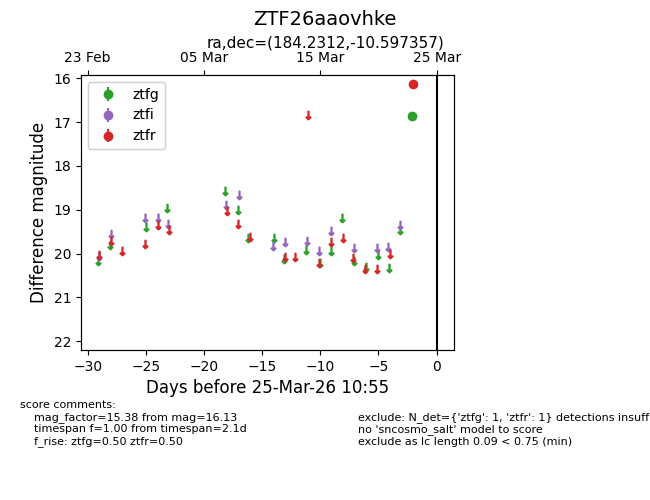
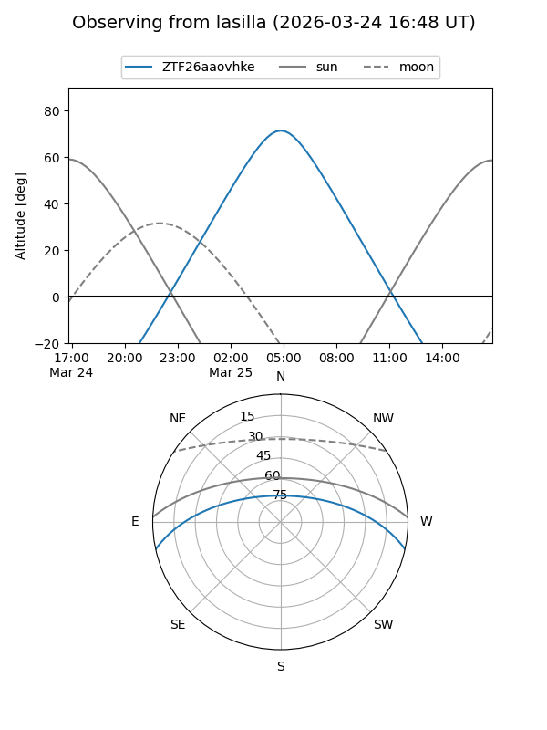
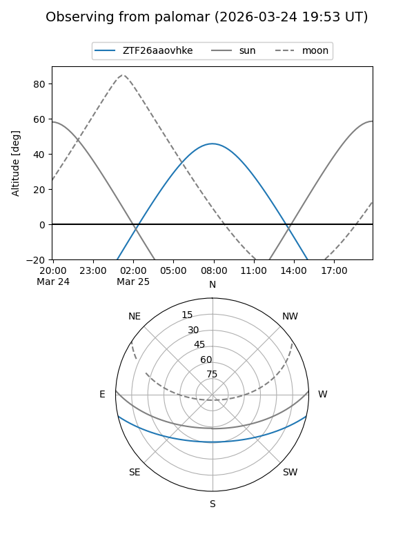

ZTF26aaovhke
Target ZTF26aaovhke at 2026-03-25 10:57
Aliases and brokers:
FINK: link
Lasair: link
ALeRCE: link
alt names
ZTF26aaovhke (ztf,fink_ztf)
Coordinates:
equatorial (ra, dec) = 184.2312,-10.59736
equatorial (HMS+DMS) = 12:16:55.49,-10:35:50.48
galactic (l, b) = (289.2729,+51.35676)
Flags:
Photometry:
last ztfg=16.87, ztfr=16.13
1 ztfg, 1 ztfr detections
Lightcurve

Visibility


Additional plots